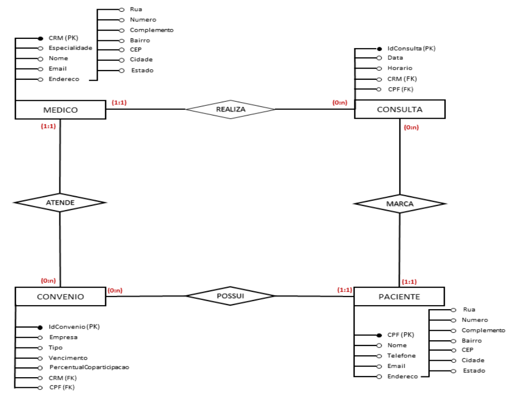

Modelo entidade Relacionamento - Clínica Médica
Neste projeto, atuei como Analista de Negócios e Arquiteto de Requisitos, com o objetivo de desenhar a estrutura de dados fundamental para um sistema de gestão de uma clínica médica simplificada. O foco foi criar um modelo de banco de dados robusto, intuitivo e expansível.
Diagrama de Classes - Controle e validação de acesso
Expertise em design de sistemas complexos através de
Diagramas de Classes UML, com foco em
generalização/especialização (herança), associações,
agregações e composições. Habilidade em traduzir
requisitos de negócio em modelos de software robustos e
flexíveis.
Experiência em desenvolvimento visando a acessibilidade. Como no
diagrama abaixo, onde uma das funcionárias da empresa era PCD. E o sistema foi desenvolvido
de uma forma na qual ela pudesse ser incluida.

Diagrama de casos de uso - Controle e validação de acesso
Neste projeto, atuei como Analista de Requisitos com o objetivo de mapear as interações e funcionalidades essenciais do "BergaWorks Money", um sistema de automação inteligente para ambientes corporativos. O foco principal foi garantir que todas as necessidades dos usuários e do negócio fossem claramente representadas. Desafio: Como detalhar as funcionalidades de um sistema complexo que envolve múltiplos usuários (Funcionários, CEO, PCD) e tecnologias (voz, câmeras, IA externa) de forma que a equipe de desenvolvimento e os stakeholders tivessem uma visão clara do escopo e do comportamento esperado do sistema. Solução (com base no Diagrama de Casos de Uso): Desenvolvi um Diagrama de Casos de Uso UML que ilustra as principais funcionalidades do sistema e suas interações com os atores.